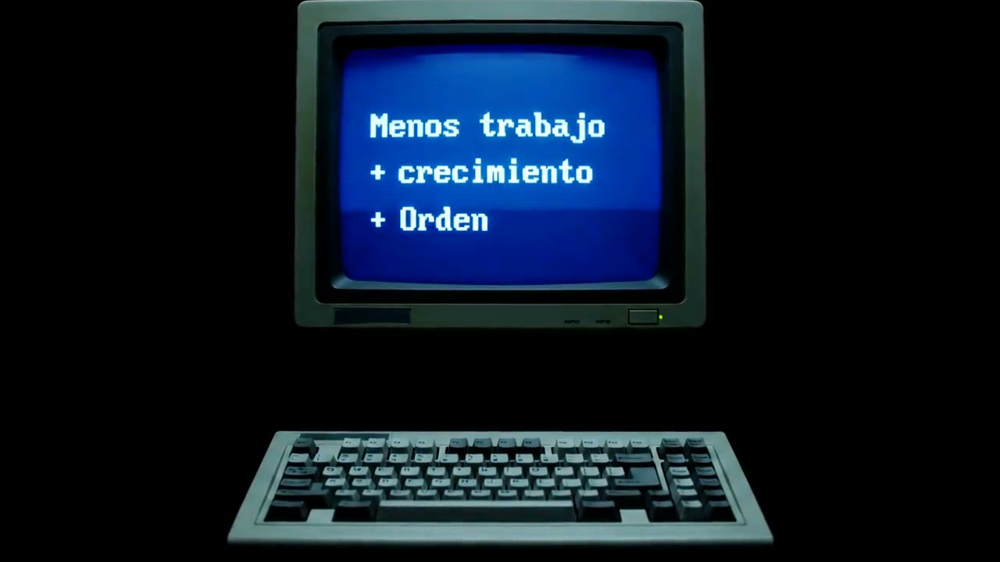
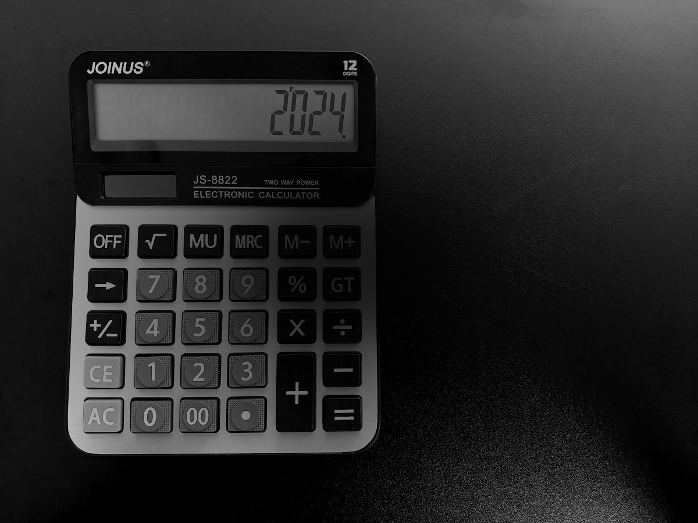

Automatizaciones
Los softwares que ya usas dejan de estar aislados. Lo que hoy alguien copia y pega entre sistemas pasa a ocurrir solo, sin que nadie lo empuje.

Organizo la carga de tareas de tu equipo y automatizo lo lento y repetitivo que hoy hacen a mano.
El correo, la planilla y el WhatsApp. Cien obligaciones por cliente repartidas entre tu equipo, y ninguna pantalla que te diga en un segundo qué está listo, qué vence esta semana y quién lo tiene. Así, que algo se pase no es mala suerte: es cuestión de tiempo.
Permite tener más clientes, con mejor atención, con los mismos empleados.
Vista de ejemplo · los datos reales son los de tu oficina
Las obligaciones que se repiten cada mes se cargan solas, con su fecha.
Cada una nace asignada. Nadie pregunta de quién era.
El responsable recibe el aviso antes de que venza, no después.
Una pantalla por persona, un click. No aprenden ningún software.
Los softwares que ya usas dejan de estar aislados. Lo que hoy alguien copia y pega entre sistemas pasa a ocurrir solo, sin que nadie lo empuje.

02El tracking mensual deja de hacerse a mano. Los datos llegan solos a la planilla que ya conoces, sin checks manuales ni riesgo de que se salte una fila.
Contratos, finiquitos y cartas que hoy alguien escribe uno por uno. Los datos ya están en tu sistema: el documento sale armado y listo para firmar.

Contabilidad y remuneraciones. Si tu oficina usa alguno de estos, los datos pueden pasar de un sistema a otro sin que nadie los copie a mano. Si usas otro, se revisa en el diagnóstico.
Una llamada sin costo. Dónde se va el tiempo de tu equipo, qué se copia a mano y qué se te está pasando.
Siempre está en los mismos cuatro lugares: los datos que alguien traspasa a mano entre el software y la planilla, los vencimientos que se sostienen con memoria y Excel, los documentos que hay que pedir dos veces, y el WhatsApp donde el trabajo entra y nadie lo registra. Sales de la llamada sabiendo cuáles son los tuyos, trabajes conmigo o no.
Primero le ponemos monto a lo que te cuesta hoy. Lo que cobro es una fracción de eso y va por escrito. Si no te cierra, no hay proyecto.
Porque no te entrego una herramienta vacía para que la configures. Llega cargada con tus clientes, tus obligaciones y tus responsables, y me quedo acompañando la adopción la primera semana y los 30 días siguientes. El software abandonado casi nunca falla por el software: falla porque nadie sostuvo la puesta en marcha.
No. Cada persona ve una sola pantalla con lo suyo y marca cuando está listo. Un click. Entreno a cada uno personalmente en su pantalla, no en el sistema completo.
No. El Centro de Control se suma a lo que ya tienes, no lo reemplaza. Y donde hoy alguien copia datos de un sistema a otro a mano, eso es justamente lo que se puede automatizar.
Hay un pago único de instalación y una mantención mensual. El monto depende del tamaño de tu estudio y de tu cartera, así que se define en el diagnóstico, con números concretos y por escrito, antes de que decidas nada.
Depende del tamaño de la cartera y de en qué estado esté tu Excel actual. Eso sale del diagnóstico. Lo que no cambia es el orden: primero levantamiento, después montaje, después onboarding con tu equipo y recién ahí queda corriendo.